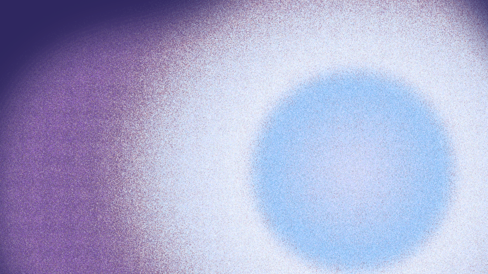

About Me
I am currently a third year undergraduate student at the University of Texas at Austin studying physics and astronomy. Outside of academics, I enjoy painting, ceramics, and spending time with my dog.
Education:
BS Astronomy Honors and BS Physics 2028
Research Interests:
Galaxy Evolution, Chemical Evolutions, The High Redshift Universe
Publications: My ADS link!
Research

Stellar Continuum Modeling Accounting for Nonuniform Dust
Accounting for the effects of nonuniform dust when calculating galaxy properties is a difficult. As a result, astronomers assume uniform dust screens in attenuation calculations. This project presents a possible method of accounting for nonuniform dust screens using FiCUS, a stellar continuum fitting model developed by Alberto Saldana-Lopez. View my poster for this project here!.
CIERA REU 2026: Characterizing Host Galaxies of SLSN-1
This past summer, I was fortunate to be able to attend the REU program at Northwestern's CIERA where I worked with Professor Allison Strom to understand properties of superluminous supernovae host galaxies. Superluminous supernovae are the most recently discovered class of supernovae. Using the properties of the galaxies where these events take place, we can help constrain models for possible progenitors. Using Cue, a neural net emulator, we developed a consistent method of inferring the gas-phase metallicity and ionizing conditions of these hosts. View my work for this project here!
Contact
Email: adtran2847@utexas.edu
ORCID ID: 0009-0009-6868-4457